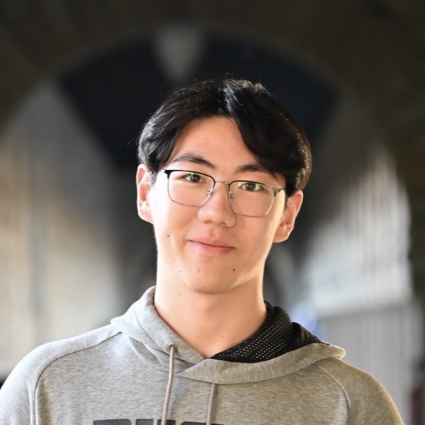

About
I am a 5th-year M.S. Student in EECS at UC Berkeley, fortunately advised by Prof. Joseph Gonzalez. I am currently a part of the Sky Computing Lab and Berkeley AI Research (BAIR) and am interested in LLM memory, agents and post-training.
I completed my Bachelor’s degrees with double majors in Computer Science and Applied Mathematics, graduating with the Highest Distinction in general scholarship.
Extended acknowledgment to Dacheng Li for his mentorship on research.
Publications * Equal contribution · † Main contributor
-
D-Skill: Distilling Teacher Knowledge through Agent Skills
Shuo Yuan, Dacheng Li, Joseph E. Gonzalez
Under Review -
I-PTC: Interactive Programmatic Tool Calling for Stateful Tool-Augmented Agents
Shuo Yuan*, Huanzhi Mao*, Chengkun Cao*, Joseph E. Gonzalez
NeurIPS 2026 -
RLEM: Reinforcement Learning for External Memory
Dacheng Li, Shiyi Cao, Fangzhou Zhao, Shuo Yuan, Sumanth R. Hegde, Joseph E. Gonzalez, Ion Stoica
COLM 2026 Efficient Reasoning Workshop -
SkyRL-Agent: Efficient RL Training for Multi-turn LLM Agent
Shiyi Cao*, Dacheng Li*, Fangzhou Zhao†, Shuo Yuan†, Sumanth R. Hegde†, Connor Chen†, Charlie Ruan†, Tyler Griggs, Shu Liu, Eric Tang, Richard Liaw, Philipp Moritz, Matei Zaharia, Joseph E. Gonzalez, Ion Stoica
Preprint -
Supporting Our AI Overlords: Redesigning Data Systems to be Agent-first
Shu Liu, Soujanya Ponnapalli, Shreya Shankar, Sepanta Zeighami, Alan Zhu, Shubham Agarwal, Ruiqi Chen, Samion Suwito, Shuo Yuan, Ion Stoica, Matei Zaharia, Alvin Cheung, Natacha Crooks, Joseph E. Gonzalez, Aditya G. Parameswaran
CIDR 2026 -
SkyRL-SQL: Multi-turn SQL Data Agents via RL
Shu Liu, Alan Zhu, Sumanth Hegde, Shiyi Cao, Shuo Yuan, Samion Suwito, Tyler Griggs, Matei Zaharia, Joseph E. Gonzalez, Ion Stoica
NeurIPS 2025 MTI-LLM Workshop
Open Source Contribution
- SkyRL — a modular full-stack RL library for LLMs.
Teaching & Service
- TA, EECS 183: Natural Language ProcessingFall 2026
- TA, CS 170: Efficient Algorithms and Intractable ProblemsFall 2024 – Spring 2026
- Reviewer, NeurIPS 2025 MTI-LLM Workshop2025
Other Projects
- Linear Algebra Games — interactive web games for Berkeley's MATH 56, with Prof. David Nadler.
- EECS 106A Project: RoboMath — final project for Introduction to Robotics.
- CS 180 Projects — coursework for Intro to Computer Vision and Computational Photography.
- CS 170 Teaching Content — teaching materials I created for Efficient Algorithms and Intractable Problems.